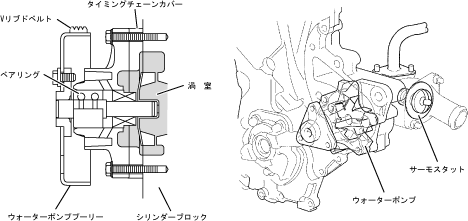

| ウォーターポンプ |
| ● |
小型・軽量なウォーターポンプを採用し，Vリブドベルトによる背面駆動としました。ベルトセンターをベアリングの中心付近に設定することにより小型ベアリングの採用が可能となり，信頼性を確保しつつコンパクト化，軽量化をはかりました。
|
| ● |
タイミングチェーンカバーおよびシリンダーブロックで渦室を構成することによりコンパクト化をはかりました。また，ローターの羽根形状の最適化により高効率化をはかりました。
|
|  |
 ウォーターポンプ仕様(2NZ-FE・1NZ-FE共通) ウォーターポンプ仕様(2NZ-FE・1NZ-FE共通)
|